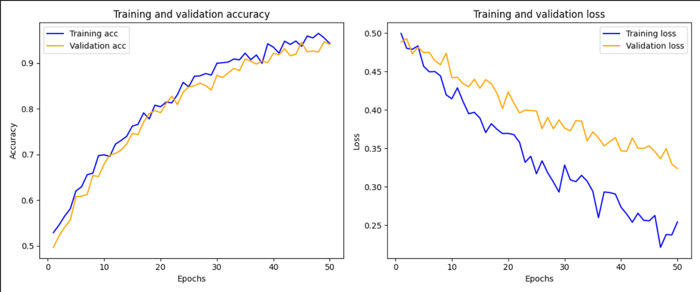

Our AI Model
An innovative project that leverages the power of Artificial Intelligence (AI) to revolutionize waste management. Driven by a commitment to sustainability and environmental stewardship, our AI model represents a pivotal advancement in the pursuit of a cleaner and greener future. By automating and optimizing waste classification processes, it empowers waste management stakeholders to make data-driven decisions, streamline operations, and minimize environmental impact.
As we continue to refine and enhance our AI model, we are dedicated to fostering collaborations and partnerships aimed at realizing a more sustainable and eco-friendly world. Together, let us embrace the transformative potential of AI to create a brighter and cleaner future for generations to come.
Model Architecture
Our model is built using TensorFlow and Keras, incorporating transfer learning from the ImageNetV2 dataset to leverage pre-trained model. The model processes images with a batch size of 32 and an input size of 480x480 pixels across 3 channels.
The model has been trained for 50 epochs on the Biodegradable and Non-Biodegradable dataset, which includes over 256,000 images. This extensive training enables our model to accurately classify the type of waste.
Performance and Accuracy
The proficiency of our model is clearly demonstrated by its accuracy and the assurance it provides in its forecasts. Through thorough examination and enhancement, we make certain that our model fulfills the stringent criteria necessary for practical applications in waste separation achieving over 98% of accuracy.
